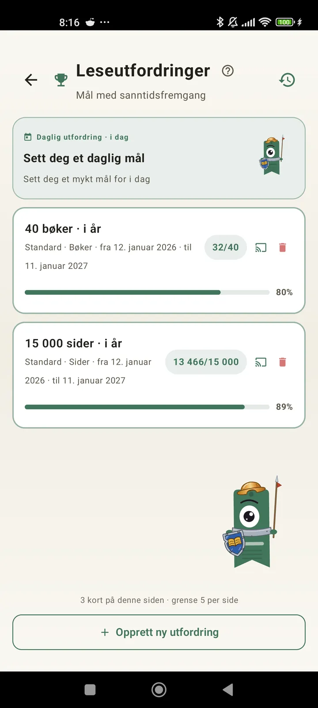

Bli kjent med deg selv som leser
Utfordringer, bingoer, widgeter og flere funksjoner for å få mest mulig ut av lesingen. Nytt i 3.7: widgeter for utfordringer og bingo.

Leseutfordringer
Sett mål etter sider, rekker eller sjangre. Opptil 15 aktive utfordringer gratis, ubegrenset med Pro. Pluss en tilpassbar daglig utfordring som ikke teller mot grensen.

Daglig utfordring
Et nytt mål hver dag. Fullfør utfordringen før midnatt for å holde rekken i gang.

Lesebingo
To nye bingoer hver måned med tematiske ruter. Fullfør rader, kolonner eller hele brettet.

Ukeoppsummering
Hver mandag får du et øyeblikksbilde av uken din: leste sider, total tid, rekke og hvordan den står seg mot forrige uke.

Månedsoppsummering
Når en måned er over, oppsummerer Lecturameter den: sider, tid, fullførte bøker, tempoet ditt dag for dag og månedens bok.

Bingo-widget Pro
Månedens bingobrett, alltid synlig, med rutene du har fullført og linjene du har fått.

Bok-widget Gratis
Se boken du leser rett på startskjermen: omslag, tittel, forfatter, sider og prosent fremdrift, alltid oppdatert. Størrelsen kan endres så den passer der du vil.
Seriøst, appen føles som terapi. Jeg har gått fra å lese et par sider om dagen til rundt 20 sider om dagen, og det går stadig bedreTilbakemelding fra en bruker, sendt på e-post

Månedssammenligning Pro
Et raskt blikk på de siste månedene uten å åpne appen. Søyler med sidene for hver måned, med inneværende måned uthevet, så du ser med en gang om det går bedre eller dårligere enn forrige måned.

Utfordringswidget Pro
De aktive utfordringene dine og fremdriften deres på startskjermen. Velg hvilke som skal vises fra Utfordringer-skjermen.